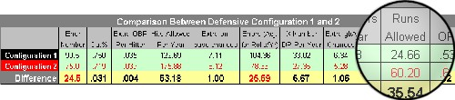

I started playing Strat-O-Matic Baseball way back in 1980 and soon became hooked for life. It all started with a limted number of teams in a simple selector set of the 1979 season.
I've been part of a few leagues here and there, but I've been fascinated with (some might even say fixated upon) some of the more obscure aspects of the game... namely defensive ratings and their impact on not just the odds of any particular role's outcome, but also game/season outcomes.
Way back in 2004, I created a product known as Defensive Evaluations. I've included a snippet of a couple cells from it here. Defensive Evaluations was essentially an Excel spreadsheet where you would enter a player's range and e-number to see its impact upon various things (out%, extra OBP/hitter, hits allowed/season, extra on-base chances/hitter, errors adjusted for the number rolls/season in your league, x-number DPs turned/season, extra DP chances/hitter, baserunners allowed/season, runs allowed/season and OPS allowed on x-numners).
It was quite an undertaking because, while many of those thing are easy to calculate if you know something about Strat fielding charts and dice roll odds, other parts required a lot of research into base/out information and runs created values for specific events (as in the difference between a GB(2B)C and a GB(2B)A. Both are outs, but they definitely have different 'runs created; values.
A big improvement would be to move all that data to a database on a server and have it available on a website where the user can tinker with many of the values that are behind the scenes. If they want to disable the impact of holding on runners or having the infield in, they can disable it. Yes, those options were available on the spreadsheet. However, in addition to just those options, the user would be able to change or disable more values under the hood. I'm envisioning a website that would allow a user to edit the runs created values for each of the possible event outcomes of an x-number... or any values behind the scenes for that matter.
So, reviving (and improving) Defensive Evaluations has been on my mind lately, but so has another product that has been elusive to the Strat community. Deciphering the annual ratings guide Strat releases in mid January. I have a beta version of the new project running on my home computer. It's current an unnamed project.